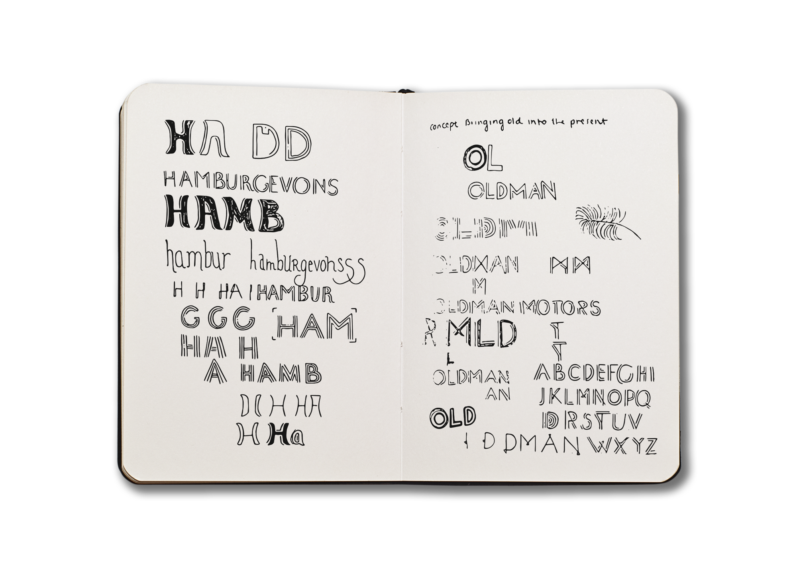

TYPE DESIGN FALL 2017
Oldman Motorcar Company
I worked with my friend, Gulliver Oldman, to create a typeface, Metropolitan Motion, for a speculative car company he concepted. The basis for the brand is retro car bodies with electric engines. They are vintage cars designed for today. The layered typeface takes inspiration from both art deco and mid-century modern design. The sharp angles give the type a modern feel.
TASK: Create a typeface for the Oldman Motorcar Company wordmark
ROLE: Research • Type Design • Specimen Design • Art Direction • Copy


The Oldman Motorcar Company pairs vintage aesthetics with modern practicality. The inline type gives the illusion of an engine circuit and simultaneously, lines on a street. The large counters and low crossbars are art deco-inspired, but the sharp apexes give the type a modern flair. The crossed strokes on the "m" and asymmetric leg on the "r" bring personality to the clean typeface.
